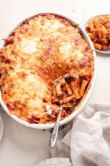

Baked Ziti

Let's get fat comfort food.
Honestly this stuff is the bomb. A staple at almost every gathering, I
will without a doubt devote nearly 50% of my plate to some delicious ziti.
What you need to make this food of the GODS.
- 1 pound dry ziti pasta
- 1 onion, chopped
- 1 pound lean ground beef
- 2 jars spaghetti saue
- 6 ounces provolone cheese,slice
- 1 1/2 cups sour cream
- 6 ounces mozzarella cheese,chredded
- 2 tablespoons grated Parmesan cheese
How to make this food of the GODS.
-
Step 1: Bring a large pot of lightly salted water to a boil. Add
ziti pasta, and cook until al dente, about 8 minutes; drain.
-
Step 2: In a large skillet, brown onion and ground beef over
medium heat. Add spaghetti sauce, and simmer 15 minutes.
-
Step 3: Preheat the oven to 350 degrees F (175 degrees C). Butter
a 9x13 inch baking dish. Layer as follows: 1/2 of the ziti, Provolone
cheese, sour cream, 1/2 sauce mixture, remaining ziti, mozzarella cheese
and remaining sauce mixture. Top with grated Parmesan cheese.
-
Step 4: Bake for 30 minutes in the preheated oven, or until
cheeses are melted.